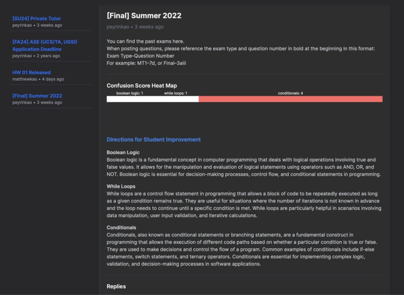
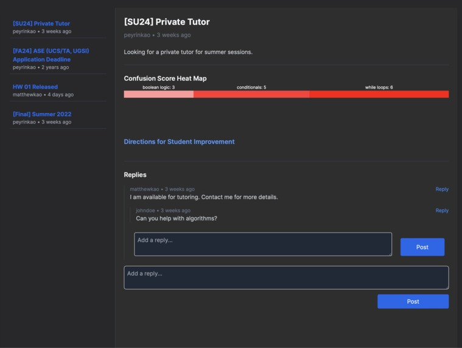

Tedstem
Utilizing AI to enhance student-instructor communication and address learning gaps effectively
Overview
Tedstem enhances student-instructor communication, allowing students to post questions and TAs to receive reports on common confusions to address learning gaps effectively. Born from the desire to easily identify and address student learning challenges within school discussion board platforms, we wanted a tool that would make it simple for educators to pinpoint where students were struggling and improve the quality of teaching discussions.
We built a toy schema of the PostgreSQL database, set up the ORM with SQLAlchemy, used Docker to speed up the database locally, built RESTful APIs, connected our front-end with AWS Bedrock, and recursively created posts through React and Next.js.


Key Features
- Text classification — categorizes posts and replies into relevant class topics
- Sentiment analysis — gauges student comprehension on each topic
- Discussion summarization — summarizes students’ discussions and provides detailed insights for instructors on identified weak points
Challenges & What I Learned
We faced problems dealing with the frontend, especially the recursive post rendering. We also had difficulties setting up and trying out different models in AWS at first, but after careful reading we managed to figure both problems out.
We learned a lot about how to think about solving a problem by exploring the stakeholders—students, teachers, administrators, and many more. As a team of educators, we know the importance of knowing student weak points and addressing that problem. We’re proud that we could create a study platform that could potentially help educators teach better.